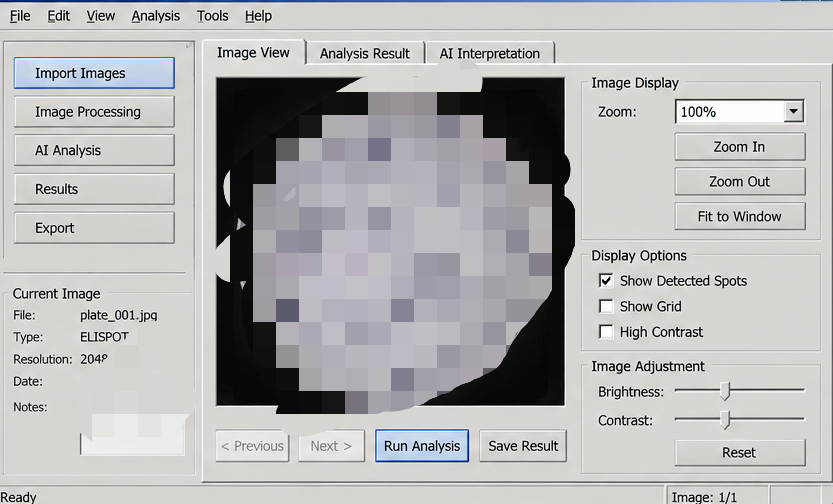
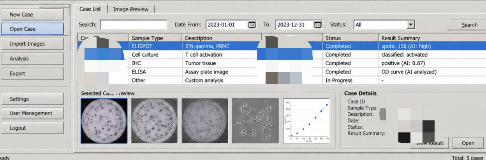

Project showcase / Registered software
AI-Assisted Laboratory Image Analysis
Computer vision and AI-assisted interpretation for laboratory and diagnostic imaging workflows.
AI-Assisted Laboratory Image Analysis System is a medical imaging and analysis platform designed to process images and video generated in laboratory and diagnostic workflows. The system uses computer vision and image-processing techniques to identify, quantify, and extract relevant visual features from laboratory images, including spot-based assay results and other diagnostic imagery. Extracted image features and quantitative results can then be analyzed by AI models to provide preliminary classification, interpretation, and statistical summaries for further review. The platform also provides supporting application functionality, including user authentication, result archiving, data management, and integration with local files and imaging workflows.
China National Software Copyright Registry #12137438
From image to structured result
The analysis workspace brings image import, processing, AI analysis, result review, and export into one interface. Operators can inspect a processed assay image, review detected spots, adjust the display, and retain the quantitative result.

Case-centered review
The case workspace keeps sample type, description, status, image previews, result summaries, and supporting charts together. Search and date filters help operators return to completed analyses while preserving the associated source images and results.
